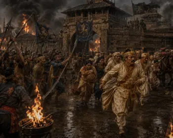
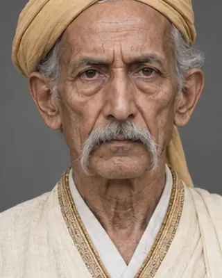
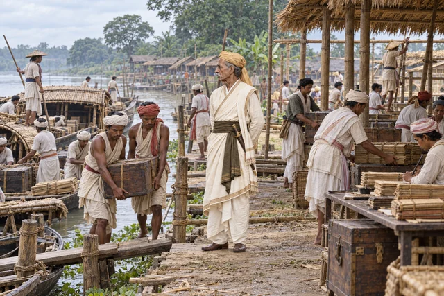
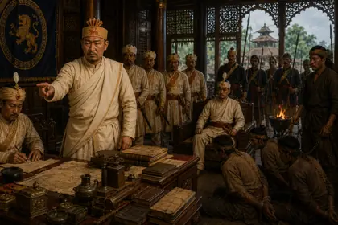
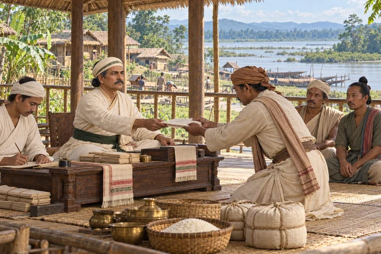
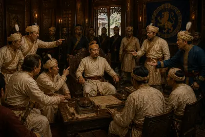
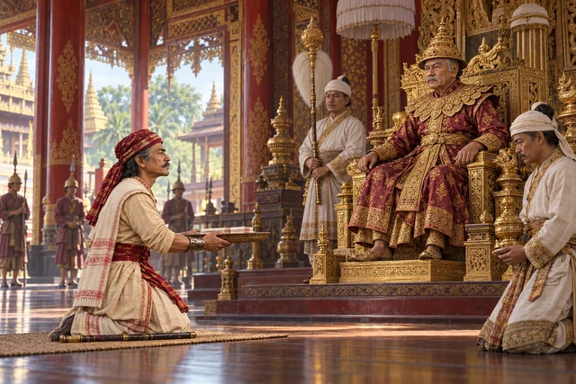
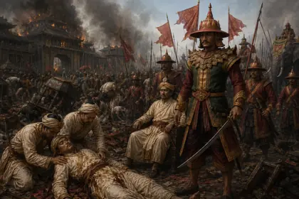

1786–1788
পূৰ্ণানন্দ বুঢ়াগোহাঁই
d. 27 March 1817 · Burhagohain and Prime Minister

Placed Kamaleswar and then Chandrakanta on the throne and ran the state for two decades. Collapsed and died on 27 March 1817 on learning that Badan Chandra Borphukan was with the Burmese.
His eldest son Ruchinath succeeded him as Burhagohain.
Record confidence: high.

1786–1788

1794

1795–1811

1805

1814–1816

1815–1816

March 1817